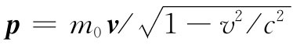

表18-1包含了我们所熟悉的全部基本经典 物理学，即在1905年以前已知的那种物理学。这里将其全都列在一个表上。借助这些方程，我们就能理解经典物理的整个领域。
首先，我们拥有麦克斯韦方程组——写成阐述的形式和简短的数学形式两种。然后就有电荷守恒，它即使是写在方括号之内的，也因为一旦我们有了完整的麦克斯韦方程组，就能够由其导出电荷守恒了，所以该表甚至还稍微有点重复。其次，我们已写出了力的定律，因为尽管有了电场和磁场仍不会告诉我们任何东西，除非我们知道它们对于电荷起着什么作用。可是，若知道了E和B，我们就能求出作用于一个带有电荷q、以速度v运动着的物体上的力。最后，虽然有了这个力但并不告诉我们什么，除非我们知道当力推动某件东西时发生了什么，否则我们需要运动定律，那就是力等于动量的变化率（记得吗？我们早在第1卷中就已经有了）。我们甚至通过把动量写成 而将相对论效应也包括了进去。
如果真正希望完美无缺的话，应该再加上一个定律——牛顿的引力定律——所以我们将其放在该表之末。
因此，在一个小小的表中，我们有了经典物理学的全部基本定律——甚至有的地方还用语言写出以及有一些重复。这是一个伟大时刻，我们已爬上了一座高峰，处在K-2高峰之上——正在准备攀登珠穆朗玛峰，那就是量子力学。我们已登上了“洛基山脉分水岭”的那个高峰，而现在可以从山的那边下去了。
我们一直在努力学习如何去理解那些方程式。现在我们已有了集合在一起的完整的方程组，以后将研究这些方程具有的意义——它们会说出我们还未见过的那些新东西。为到达这个目标，我们一直在努力工作。它已是一个伟大的成就，但现在当我们见到这一成就的全部结果时，我们将令人愉快地飘然下坡而去了。